การเขียนโปรแกรมภาษา C สำหรับ AVR (ATmega328P): ตอนที่ 9#
Keywords: Atmel AVR MCU, ATmega328P, Bare-metal C Programming, AVR-GCC, avr-libc
- การเขียนโปรแกรมภาษา C แบบ Bare-Metal และการใช้ไลบรารี avr-libc
- วงจร ADC (Analog-to-Digital Converter)
- วงจร ADC ของชิป ATmega328P
- การอ่านค่าด้วยวงจร ADC (Single Conversion)
- การอ่านค่าด้วยวงจร ADC (Free Running Mode)
- การอ่านค่าด้วยวงจร ADC (Auto Trigger - Timer1 Overflow Interrupt)
- การอ่านค่าด้วยวงจร ADC (Auto Trigger - Timer1 Output Compare Match B)
- การอ่านค่าด้วยวงจร ADC เพื่อปรับความกว้างพัลส์ของสัญญาณ PWM
▷ การเขียนโปรแกรมภาษา C แบบ Bare-Metal และการใช้ไลบรารี avr-libc#
บทความในตอนที่ 9 สาธิตตัวอย่างการเขียนโค้ดภาษา C เพื่อใช้งานวงจรที่เรียกว่า ADC (Analog-to-Digital Converter) หรือ วงจรสำหรับแปลงระดับแรงดันไฟฟ้าที่ขาแอนะล็อกอินพุตของชิป ATmega328P ให้เป็นข้อมูลดิจิทัล และเนื่องจากมีการสาธิตใช้งานวงจร ADC ร่วมกับ Timer/Counter1 ดังนั้น แนะนำให้ศึกษาเนื้อหา ตอนที่ 7 และ ตอนที่ 8 ด้วยเช่นกัน
รายละเอียดเกี่ยวกับรีจิสเตอร์ที่เกี่ยวข้องกับการทำงานของ ADC และ Timer/Counter1 สามารถดูได้เอกสารของผู้ผลิต ATmega328P Datasheet
▷ วงจร ADC (Analog-to-Digital Converter)#
วงจร ADC ในชิป ATmega328P จัดอยู่ในประเภท
Successive-Approximation ADC
มีไว้สำหรับการแปลงระดับแรงดันไฟฟ้าที่ขาอินพุตแบบแอนะล็อก ให้เป็นข้อมูลดิจิทัล
ขนาด 10 บิต ได้ค่าเป็นเลขจำนวนเต็ม มีค่าตั้งแต่ 0 ถึง 1023 (0x3FF)
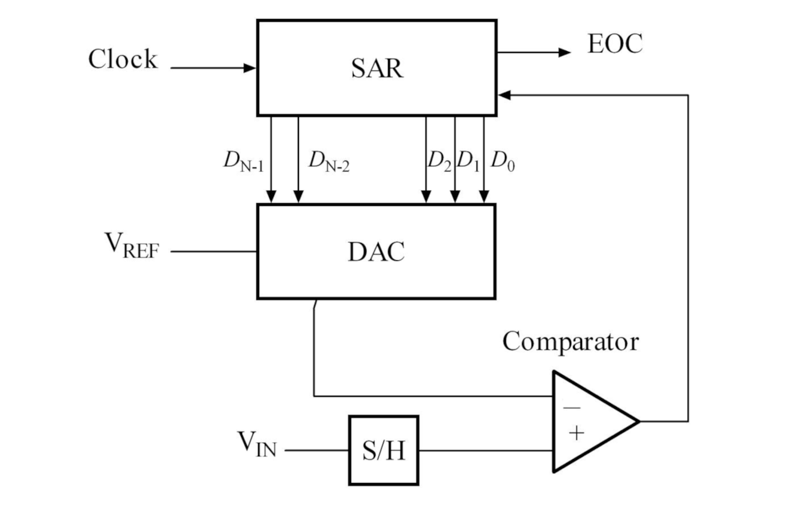
รูป: วงจร SAR ADC (Source: Wikipedia)
โดยทั่วไป การทำงานของวงจร ** Successive-Approximation ADC** ประกอบด้วย
- วงจรชักตัวอย่างและคงไว้ (Sample & Hold Circuit)
- วงจรเปรียบเทียบแรงดัน (Analog Voltage Comparator)
- วงจร DAC (Digital-to-Analog Converter)
- รีจิสเตอร์ SAR (Successive-Approximation Register) และวงจรลอจิกควบคุม
วงจร ADC ประเภทนี้ จะใช้วิธีสร้างสัญญาณจาก DAC เพื่อนำไปเปรียบเทียบระดับแรงดันไฟฟ้ากับสัญญาณอินพุต โดยใช้ค่าบิตในรีจิสเตอร์ SAR เป็นตัวกำหนดระดับแรงดัน และทำไปทีละบิต เริ่มต้นที่บิต MSB และทำซ้ำไปจนถึงบิต LSB ของรีจิสเตอร์ SAR เช่น ขนาด 10 บิต
เริ่มด้วยบิต MSB แล้วดูว่า แรงดันไฟฟ้าที่ถูกสร้างจาก DAC () มากกว่าหรือน้อยกว่า แรงดันไฟฟ้าของสัญญาณแอนะล็อกอินพุต () หรือไม่ ผลการเปรียบเทียบ ก็นำไปกำหนดค่าให้บิต MSB จากนั้นก็เป็นบิตถัดไป เพื่อระบุค่าบิตที่ได้จนครบทุกบิต และแรงดันไฟฟ้าจาก DAC ในขั้นตอนสุดท้าย จะเข้าใกล้ระดับของสัญญาณอินพุต (มีผลต่างใกล้เคียง 0) วิธีการเปรียบเทียบลักษณะนี้คล้ายกับการค้นหาในช่วงที่แคบลงตามลำดับแบบ Binary Search ถ้าเพิ่มจำนวนบิต ให้มากขึ้น ผลการแปลงข้อมูลจะมีค่าใกล้เคียงกับค่าของแรงดันอินพุตมากขึ้น และผลการแปลงจะได้
ยกตัวอย่างเช่น ถ้าให้แรงดันอ้างอิงเท่ากับ และข้อมูลที่ได้มีขนาด บิต ดังนั้นจึงแบ่งออกเป็น 16 ระดับ และมีระยะห่างกันหรือความละเอียด หรือ
ตัวอย่าง 1) ถ้าแรงดันอินพุตเท่ากับ จะถูกแปลงให้เป็นข้อมูล 4 บิตได้ดังนี้
- เริ่มต้นด้วย ซึ่งมีค่าน้อยกว่า
ดังนั้นให้ หรือ (เพิ่มขึ้น) และได้บิต MSB เป็น
1 - ให้ หรือ ซึ่งมีค่ามากกว่า
ดังนั้นให้ (คงเดิม) และได้บิตถัดไปเป็น
0 - ให้ หรือ ซึ่งมีค่ามากกว่า
ดังนั้นให้ (คงเดิม) และได้บิตถัดไปเป็น
0 - ให้ หรือ ซึ่งมีค่ามากกว่า
ดังนั้นให้ และได้บิต LSB เป็น
0
ผลการแปลงข้อมูลจะได้ค่า "1000" เป็นคำตอบ หรือตรงกับ 2.5V ซึ่งเป็นระดับที่น้อยกว่าแต่ใกล้เคียง
มากที่สุด
ตัวอย่าง 2) ถ้าแรงดันอินพุตเท่ากับ จะถูกแปลงให้เป็นข้อมูล 4 บิตได้ดังนี้
- เริ่มต้นด้วย ซึ่งมีค่าน้อยกว่า
ดังนั้นให้ หรือ (เพิ่มขึ้น) และได้บิต MSB เป็น
1 - ให้ หรือ ซึ่งน้อยกว่า
ดังนั้น (เพิ่มขึ้น) ได้บิตถัดไปเป็น
1 - ให้ หรือ ซึ่งมากกว่า
ดังนั้น (คงเดิม) ได้บิตถัดไป
0 -
หรือ ซึ่งมากกว่า
ดังนั้น (คงเดิม) ได้บิต LSB เป็น
0
ผลการแปลงข้อมูลจะได้ค่า "1100" เป็นคำตอบ หรือ 3.75V หรือเป็นระดับที่น้อยกว่าแต่ใกล้เคียง
มากที่สุด
ตัวอย่างโค้ด Python สำหรับการคำนวณระดับของแรงดันไฟฟ้าตามจำนวน บิต
VCC = 5.0 # Vref
n = 4 # Number of bits
steps = (1<<n) # Number of steps
print( f"{VCC/steps}" ) # volt / step
for i in range(steps):
print( f"{bin(i)[2:].zfill(4)} {VCC*i/steps:.4f}" )
ตัวอย่างโค้ด Python สำหรับการแปลงค่าจำนวน บิต ตามรูปแบบของ SAR DAC
n = 4 # Number of bits
v_ref = 5.0 # Vref for ADC
v_ain = 2.7 # Analog input voltage
v_dac = 0.0 # DAC voltage (initially set to zero)
bits = "" # Bitstring
for i in range(1,n+1):
v_dac_new = v_dac + v_ref/(2**i)
if v_dac_new <= v_ain:
v_dac = v_dac_new
bits += '1'
print( f'bit=1, x_dac={v_dac:.4f}V')
else:
bits += '0'
print( f'bit=0, x_dac={v_dac:.4f}V')
print( f'ADC: "0b{bits}", value={v_ref*int(bits,2)/(1<<n):.4f}V' )
▷ วงจร ADC ของชิป ATmega328P#
ชิป ATmega328P มีขาแอนะล็อกอินพุตให้เลือกใช้ได้ 8 ขา (A0 - A7) โดยต่อสัญญาณอินพุตผ่านวงจร ADMUX (8-channel Analog Multiplexer) เพื่อเลือกว่า จะใช้สัญญาณอินพุตช่องใดในแต่ละช่วงเวลา ข้อมูลที่ได้จากการอ่านอินพุต จะมีขนาดสูงสุด 10 บิต
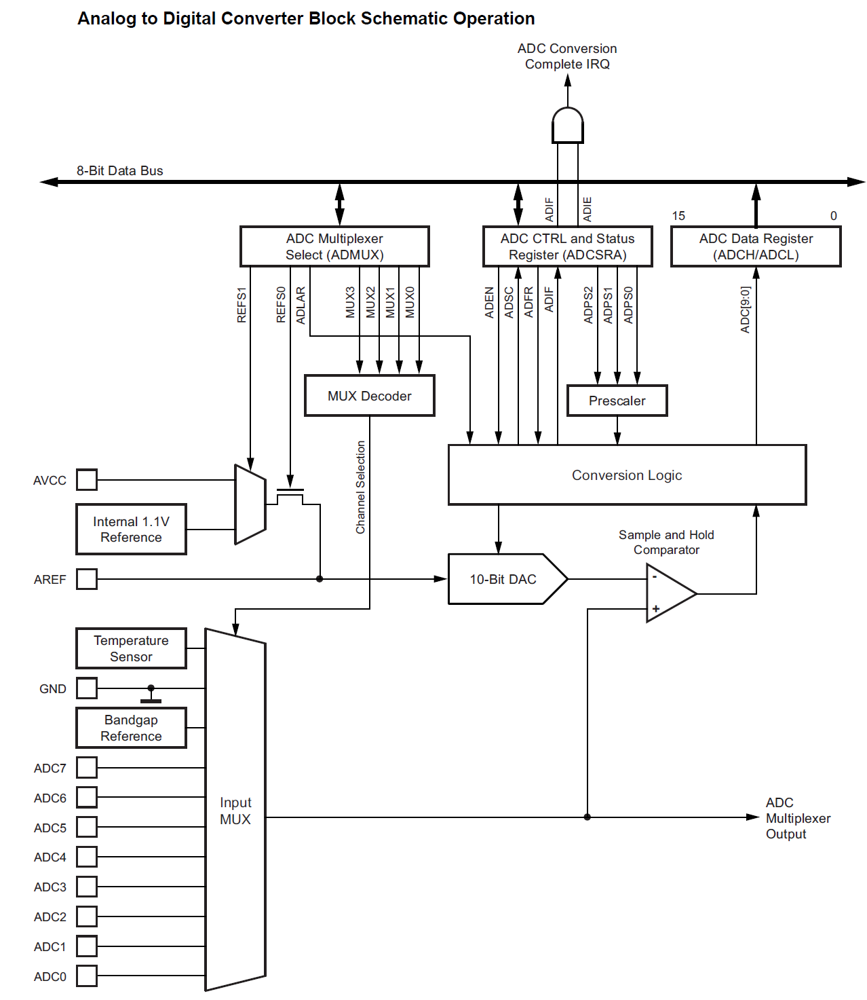
รูป: บล็อกไดอะแกรมของวงจร ADC ภายใน ATmega328P (Source: Atmel/ ATmega328p Datasheet)
การทำงานของ ADC จะต้องมีการเลือกใช้ระดับแรงดันอ้างอิงสำหรับการทำงานของ ADC เช่น
- เลือกจากขา
AVCCซึ่งเป็นขาแรงดันไฟเลี้ยงสำหรับ ADC และโดยปรกติแล้ว จะเท่ากับ VCC (เช่น 5V สำหรับบอร์ด Arduino Uno / Nano) - เลือกจากขา
AREF(Analog Reference Pin) ที่ต้องมีตัวเก็บประจุต่ออยู่ด้วย ระหว่างขานี้กับ GND ของวงจร - เลือกจากภายในชิป 1.1V (Internal Voltage Reference) และจะใช้ได้กับสัญญาณอินพุตที่มีแรงดันไฟฟ้าไม่เกิน 1.1V
ขั้นตอนการแปลงสัญญาณแอนะล็อกจากขาอินพุตขาใดขาหนึ่ง ให้เป็นข้อมูลดิจิทัล ทำหนึ่งครั้ง แบบไม่ต่อเนื่อง (Single ADC Conversion) มีดังนี้
- เลือกแหล่งที่มาของแรงดันไฟฟ้าอ้างอิง โดยกำหนดค่าบิต
REFS[1:0](Reference Selection Bits) ในรีจิสเตอร์ADMUX - กำหนดค่าบิต
ADLARในรีจิสเตอร์ADMUXเพื่อเลือกทิศทางการจัดเรียงข้อมูลขนาด 10 ลงในรีจิสเตอร์ADCขนาด 16 บิต ถ้าบิตADLAR=1ข้อมูลขนาด 10 บิต จะอยู่ชิดซ้ายในรีจิสเตอร์ (Left-adjust) แต่ถ้าบิตADLAR=0ข้อมูลขนาด 10 บิต จะอยู่ชิดขวา (Right-adjust) - เลือกตัวหารความถี่ (Prescaler) เพื่อกำหนดความถี่ของสัญญาณ ADC Clock
โดยกำหนดค่าบิต
ADPS[2:0]ในรีจิสเตอร์ADCSRA
ซึ่งจะต้องให้ได้ความถี่อยู่ในช่วง 50kHz ถึง 200kHz ถ้าต้องการได้ข้อมูลขนาด 10 บิต - เลือกช่องอินพุตสำหรับ ADC โดยกำหนดค่าบิต
MUX[3:0]ในรีจิสเตอร์ADMUX(ADC Multiplexer Selection Register) - เขียนค่าบิต
ADEN(ADC Enable) ในรีจิสเตอร์ADCSRAให้เป็น 1 เพื่อให้วงจร ADC เริ่มทำงาน - ตรวจสอบบิต
ADSCในรีจิสเตอร์ADCSRAถ้าบิตADSC=1ให้รอก่อน แต่ถ้าบิตADSC=0แสดงว่า การแปลงข้อมูลของ ADC เสร็จสิ้นแล้ว - อ่านค่าที่เป็นข้อมูล 10 บิต จากรีจิสเตอร์
ADCขนาด 16 บิต ซึ่งประกอบด้วยรีจิสเตอร์ 8 บิตADCHและADCL
ถ้าต้องการให้ ADC ทำงานในโหมด Free-Running (วงจร ADC ทำงานต่อเนื่อง)
จะต้องกำหนดให้บิต ADTS[2:0]="000" ในรีจิสเตอร์ ADCSRB และบิต ADATE=1 ในรีจิสเตอร์ ADCSRA
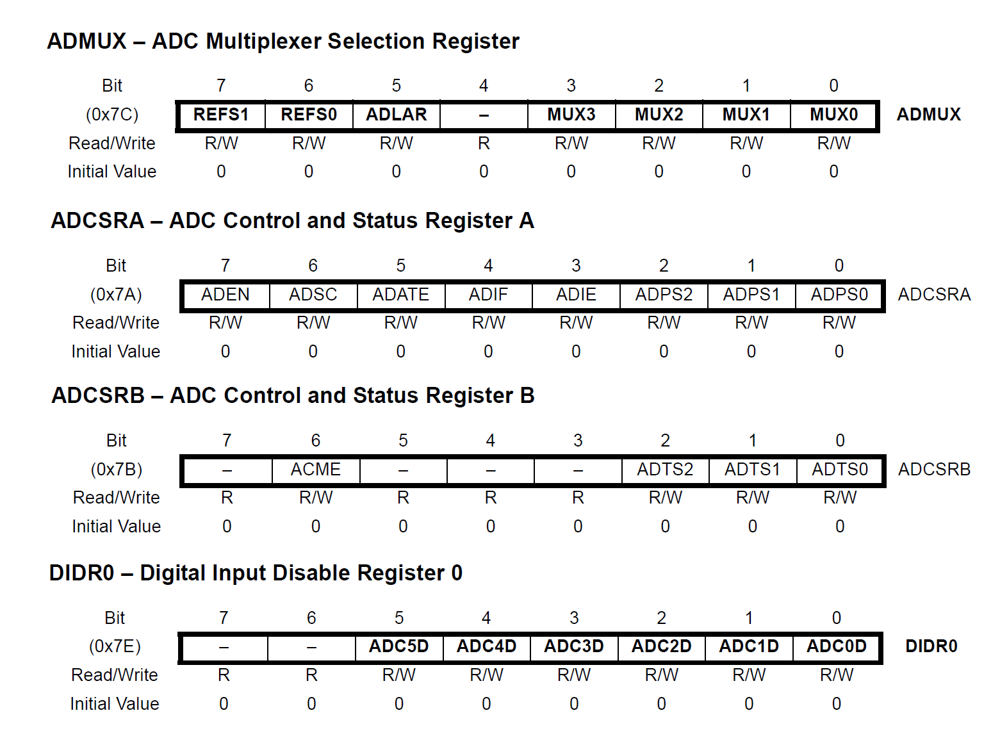
รูป: รีจิสเตอร์ของวงจร ADC เช่น ADMUX ADCSRA ADCSRB DIRR0
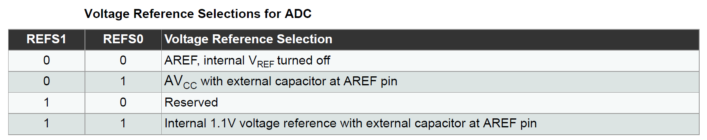
รูป: ตัวเลือกสำหรับบิต REFS[1:0] (Voltage Reference)
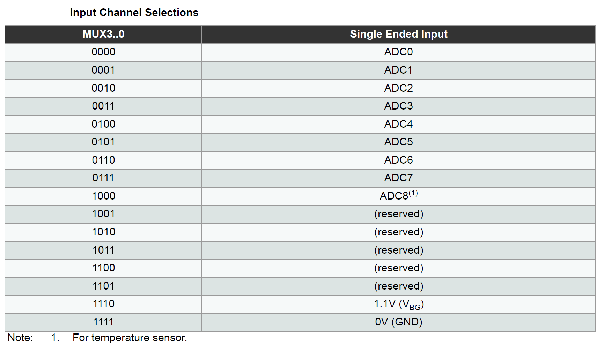
รูป: ตัวเลือกสำหรับบิต MUX[3:0] (Analog Multiplexer)
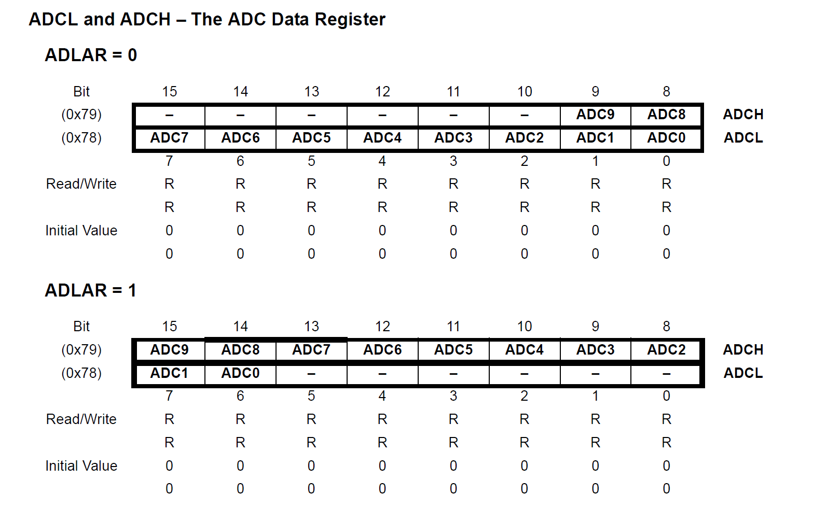
รูป: ตัวเลือกสำหรับบิต ADLAR และการจัดเรียงบิตในรีจิสเตอร์ ADCH:ADCL
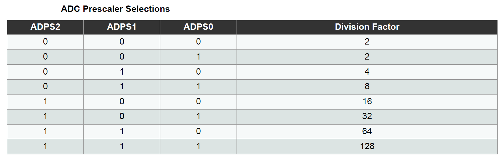
รูป: ตัวเลือกสำหรับบิต ADPS (ADC Prescaler Selection)
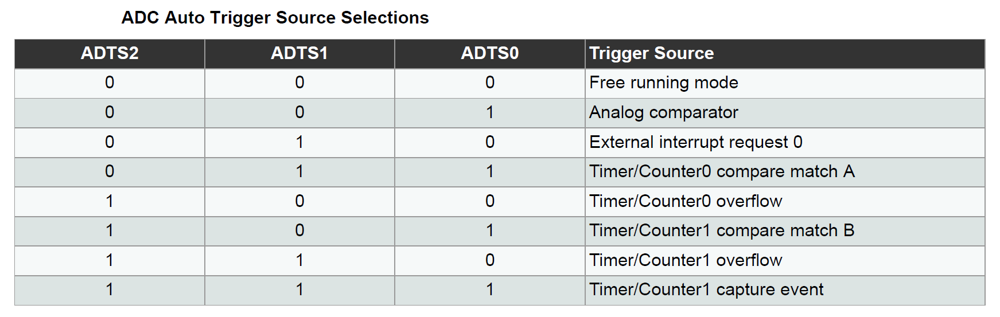
รูป: ตัวเลือกสำหรับบิต ADTS (ADC Auto Trigger Source Selection)
▷ การอ่านค่าด้วยวงจร ADC (Single Conversion)#
โค้ดตัวอย่างนี้สาธิตอ่านค่าแรงดันอินพุตจากขา PC0 / A0 และ PC1 / A1 ตามลำดับ แล้วนำค่าที่อ่านมาเปรียบเทียบกัน เพื่อใช้กำหนดสถานะลอจิกที่ขาเอาต์พุต PB5 / D13 ถ้าอินพุต A0 มากกว่า A1 จะทำให้เอาต์พุต PB มีสถานะลอจิกเป็น HIGH ในกรณีตรงข้าม จะได้ลอจิก LOW
การใช้งาน ADC จะต้องมีการตั้งค่าตัวหารความถี่ โดยเลือกใช้ค่า /128 ซึ่งจะทำให้ได้ความถี่สำหรับ ADC Clock เท่ากับ 16MHz/128 = 125kHz หรือคาบเท่ากับ 8 usec
การทำงานของวงจร ADC ภายในชิป ATmega328P จะต้องใช้ความถี่ในช่วง 50kHz ถึง 200kHz หากต้องการได้ข้อมูล 10 บิต
#include <avr/io.h>
#include <avr/interrupt.h>
#define LED_PIN (PB5) // Arduino D13 pin / Onboard LED
void initADC() {
// Set PC0/A0 as an input pin
DDRC &= ~(1 << DDC0);
// Disable Digital Input Buffer on A0
DIDR0 |= (1<<ADC0D);
// Set reference voltage to AVcc
ADMUX = (1 << REFS0);
// Right-Adjust Result (ADLAR=0)
ADMUX &= ~(1<<ADLAR);
// Set ADC prescaler to 128 (ADPS[2:0]="111")
// 16MHz/128 = 125kHz ADC clock
ADCSRA = (1<<ADPS2) | (1<<ADPS1) | (1<<ADPS0);
ADCSRA |= (1<<ADEN); // Enable ADC
ADCSRA |= (1<<ADSC); // Start the first ADC conversion
// Wait for ADC conversion to complete
while (ADCSRA & (1<<ADSC));
}
uint16_t readAnalog( uint8_t channel) { // Read A0 or A1 pin
// Clear all bits of ADMUX[3:0] (select A0 by default)
ADMUX &= ~((1<<MUX3)|(1<<MUX2)|(1<<MUX1)|(1<<MUX0));
if (channel == 1) { // Select A1 input
ADMUX |= (1<<MUX0); // Set MUX0 bit
}
// Start a single ADC conversion
ADCSRA |= (1<<ADSC);
// Wait for ADC conversion to complete
while (ADCSRA & (1<<ADSC));
// Return the result (10-bit, right-aligned)
return ADC;
}
int main(void) {
DDRB |= (1 << LED_PIN);
initADC(); // Initialize ADC
while (1) {
uint16_t a0 = readAnalog(0); // Read A0 input
uint16_t a1 = readAnalog(1); // Read A1 input
if (a0 > a1) { // Compare both inputs
PORTB |= (1<<LED_PIN); // Output HIGH
} else {
PORTB &= ~(1<<LED_PIN); // Output LOW
}
}
}
ตัวอย่างการเขียนโค้ดและจำลองการทำงานเสมือนจริงโดยใช้ WokWi Simulator มีดังนี้ เลือกใช้บอร์ด Arduino Nano และโมดูลตัวต้านทานปรับค่าได้ Potentiometer จำนวน 2 ชุด (เป็นแบบ Circular และ Linear) ต่อเข้าที่ขา A0 และ A1 ตามลำดับ
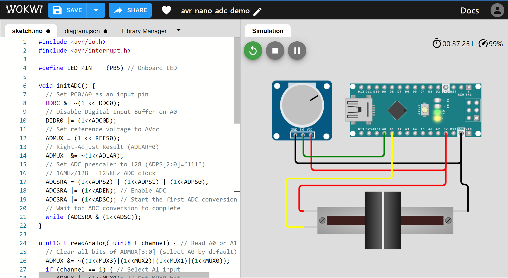
รูป: การจำลองการทำงานของโค้ดด้วย WokWi Simulator
▷ การอ่านค่าด้วยวงจร ADC (Free Running Mode)#
โค้ดตัวอย่างนี้สาธิตการค่าจากขาแอนะล็อก-อินพุตที่ขา PC0 / A0 และทำงานในโหมด
Free-Running ซึ่งจะทำให้ ADC แปลงระดับแรงดันอินพุตให้เป็นข้อมูล 10 บิต
ซ้ำไปเรื่อย ๆ และมีการเปิดใช้งานอินเทอร์รัพท์ของวงจร ADC และเมื่อเกิดเหตุการณ์ในแต่ละครั้ง
ฟังก์ชัน ISR จะมีการอ่านค่าที่ได้จากรีจิสเตอร์ ADC เก็บลงในตัวแปร adcValue
และมีการสลับสถานะลอจิกที่ขา PB4 (LED2_PIN) หนึ่งครั้ง
ถ้าแรงดันอินพุตมีมากกว่า AVCC/2 ซึ่งก็คือประมาณ 5V/2 อ่านได้ค่า 511 หรือมากกว่า
จะทำให้ขาเอาต์พุต PB5 / D13 (LED1_PIN) มีลอจิกเป็น HIGH ในกรณีอื่นจะได้ลอจิก LOW
#include <avr/io.h>
#include <avr/interrupt.h>
#include <util/atomic.h>
#define LED1_PIN (PB5) // Arduino D13 pin / Onboard LED
#define LED2_PIN (PB4) // Arduino D12 pin
volatile uint16_t adcValue = 0;
// The ADC interrupt flag will be cleared automatically
// after the ISR(ADC_vect) is called.
ISR(ADC_vect) {
adcValue = ADC; // Save the current ADC value
PINB |= (1<<LED2_PIN); // Toggle PB4
ADCSRA |= (1<<ADIF); // Clear the ADC interrupt flag (not necessary)
}
void initADC() {
// Set PC0/A0 as an input pin
DDRC &= ~(1 << DDC0);
// Disable Digital Input Buffer on A0
DIDR0 |= (1<<ADC0D);
// Set reference voltage to AVCC
ADMUX = (1 << REFS0);
// Right-Adjust Result (ADLAR=0)
ADMUX &= ~(1<<ADLAR);
// Select A0 as ADC input ADMUX[3:0]="0000"
ADMUX &= ~((1<<MUX3)|(1<<MUX2)|(1<<MUX1)|(1<<MUX0));
// Set ADC prescaler to 128 (ADPS[2:0]="111")
// 16MHz/128 = 125kHz ADC clock
ADCSRA = (1<<ADPS2) | (1<<ADPS1) | (1<<ADPS0);
// Enable ADC (Free running), enable ADC interrupt
ADCSRB = 0; // ADTS[2:0]="000"
ADCSRA |= (1<<ADEN) | (1<<ADATE) | (1<<ADIE) | (1<<ADSC);
//ADCSRA |= (1<<ADSC); // Start the next conversion
}
int main(void) {
uint16_t value;
DDRB |= (1 << LED1_PIN);
DDRB |= (1 << LED2_PIN);
initADC();
sei(); // Enable global interrupts
while (1) {
ATOMIC_BLOCK(ATOMIC_RESTORESTATE) {
value = adcValue;
}
if (value > 511) {
PORTB |= (1<<LED1_PIN); // Output HIGH
} else {
PORTB &= ~(1<<LED1_PIN); // Output LOW
}
}
}
ลองมาดูตัวอย่างการวัดสัญญาณเอาต์พุตที่ขา PB5 (LED1_PIN)
และ PB4 (LED2_PIN) โดยใช้บอร์ด Arduino Nano
และอุปกรณ์ USB Logic Analyzer
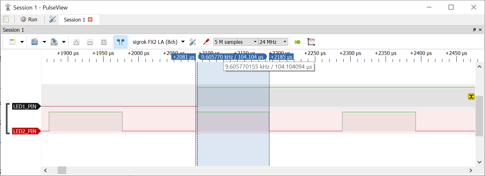
รูป: การวัดสัญญาณที่ขาเอาต์พุต (ช่วงที่ LED1_PIN มีขอบขาขึ้น)
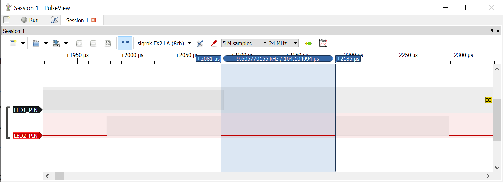
รูป: การวัดสัญญาณที่ขาเอาต์พุต (ช่วงที่ LED1_PIN มีขอบขาลง)
จากรูปคลื่นสัญญาณ จะเห็นได้ว่า เป็นช่วงที่มีการเปลี่ยนแปลงลอจิกที่ขา LED1_PIN
ซึ่งเกิดจากการเปลี่ยนแปลงระดับอินพุตที่ขา A0 เพิ่มขึ้นสูงกว่าหรือลดลงต่ำกว่า VCC/2
นอกจากนั้นยังเห็นการเปลี่ยนแปลงลอจิกที่ขา LED2_PIN การเกิดพัลส์อย่างต่อเนื่องด้วยอัตราคงที่
แสดงว่า ADC ทำงานในโหมด Free Running
ถ้าวัดความกว้างของพัลส์จะได้ประมาณ 104.1 usec
เนื่องจาก ADC Clock ถูกกำหนดให้เท่ากับ 125kHz หรือคาบหรือหนึ่งไซเคิลเท่ากับ 8 usec และการแปลงค่าแรงดันอินพุตโดยวงจร ADC ใช้เวลาอย่างน้อย 13 ไซเคิล ดังนั้นจะใช้เวลาไม่น้อยกว่า 13 x 8 usec = 104 usec
▷ การอ่านค่าด้วยวงจร ADC (Auto Trigger - Timer1 Overflow Interrupt)#
โค้ดตัวอย่างนี้สาธิตการเปิดใช้งานวงจร ADC สำหรับสัญญาณแอนะล็อกอินพุตที่ขา PC0 / A0
ให้ทำงานโดยอัตโนมัติ (Auto Trigger Mode) โดยเลือกใช้อินเทอร์รัพท์ของวงจร
Timer/Counter1 ซึ่งจะเกิดขึ้นเมื่อนับครบรอบถึงค่าสูงสุดในแต่ละครั้ง (Overflow Interrupt)
ในกรณีนี้จะต้องกำหนดค่าบิต ADTS[2:0]="110"
วงจร Timer/Counter1 ทำงานในโหมด Normal มีการตั้งค่าตัวหารความถี่เท่ากับ /8
ดังนั้นจึงนับขึ้นด้วยความถี่ 16MHz/8 = 2MHz และได้กำหนดให้รีจิสเตอร์ TCNT1
ขนาด 16 บิต เริ่มนับด้วยค่า LOAD_VALUE ซึ่งเท่ากับ (65535-20000) ดังนั้นในแต่ละรอบการนับ
และเกิดอินเทอร์รัพท์ จะใช้เวลาเท่ากับ 1/(16MHz/8/20000) ซึ่งได้เท่ากับ 10 msec
ในตัวอย่างนี้ได้ เมื่อเกิดอินเทอร์รัพท์จากวงจร Timer/Counter1 ขาเอาต์พุต PB5 จะเปลี่ยนเป็น HIGH และเมื่อเกิดอินเทอร์รัพท์จากวงจร ADC ตามมา ขาเอาต์พุต PB5 จะเปลี่ยนเป็น LOW ดังนั้นความกว้างพัลส์ของสัญญาณเอาต์พุต จะเป็นช่วงเวลาการทำงาน ADC ในการแปลงข้อมูลแต่ละครั้ง
#include <avr/io.h>
#include <avr/interrupt.h>
#include <util/atomic.h>
#define LED_PIN (PB5)
#define LOAD_VALUE (65535-20000)
volatile uint16_t adcValue = 0;
ISR(TIMER1_OVF_vect) {
TCNT1 = LOAD_VALUE; // Reload initial value for Timer1 count
PORTB |= (1<<LED_PIN); // Turn on LED
}
// Interrupt Service Routine for ADC conversion complete
ISR(ADC_vect) {
adcValue = ADC; // Save the ADC value
PORTB &= ~(1<<LED_PIN); // Turn off LED
ADCSRA |= (1<<ADIF); // Clear ADC interrupt flag (not necessary)
}
void initTimer1() {
TCCR1A = TCCR1B = 0;
TCNT1 = LOAD_VALUE; // Load the initial value for Timer1 count
TIFR1 |= (1<<TOV1); // Clear Timer1 overflow interrupt flag
TIMSK1 |= (1<<TOIE1); // Enable Timer1 overflow interrupt
// Set up Timer/Counter1 in Normal mode, prescaler = 8
TCCR1B |= (1<<CS11);
}
void initADC() {
// Set PC0/A0 as an input pin
DDRC &= ~(1<<DDC0);
// Disable Digital Input Buffer on A0
DIDR0 |= (1<<ADC0D);
// Set reference voltage to AVCC
ADMUX |= (1<<REFS0);
// Auto-Trigger Source: Timer/Counter1 Overflow interrupt
ADCSRB = (1<<ADTS2) | (1<<ADTS1); // ADTS[2:0]="110"
// Enable ADC and set prescaler to 128
ADCSRA = (1<<ADPS2) | (1<<ADPS1) | (1<<ADPS0) | (1<<ADIE);
ADCSRA |= (1<<ADEN) | (1<<ADATE);
}
int main(void) {
uint16_t value;
DDRB |= (1<<LED_PIN);
initADC(); // Initialize ADC
initTimer1(); // Initialize Timer1
sei(); // Enable global interrupts
while (1) {
ATOMIC_BLOCK(ATOMIC_RESTORESTATE) {
value = adcValue;
}
// do something with ADC value
}
return 0;
}
ตัวอย่างการวัดสัญญาณเอาต์พุตของบอร์ด Arduino Nano โดยใช้ USB Logic Analyzer มีดังนี้
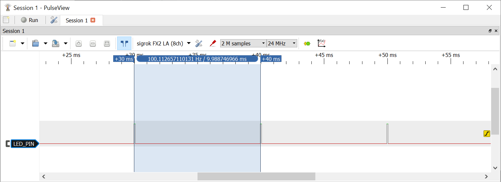
รูป: ระยะเวลาห่างกันในการเกิดอินเทอร์รัพท์ (วัดได้ประมาณ 10 msec)
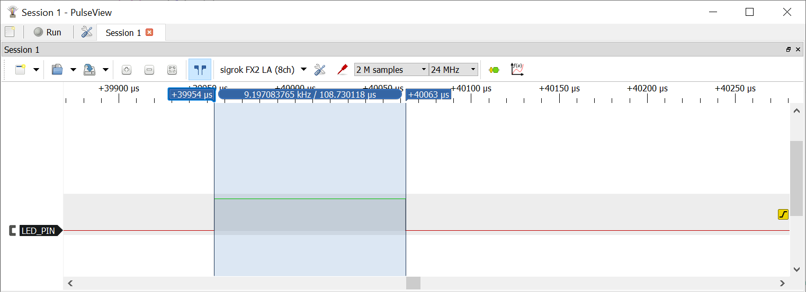
รูป: ความกว้างพัลส์ของสัญญาณเอาต์พุต (วัดได้ประมาณ 108.73 usec)
จากรูปคลื่นสัญญาณที่วัดได้ ความกว้างของพัลส์ได้ประมาณ 108.73 usec ซึ่งมากกว่า 104 usec
▷ การอ่านค่าด้วยวงจร ADC (Auto Trigger - Timer1 Output Compare Match B)#
โค้ดตัวอย่างนี้คล้ายกับโค้ดตัวอย่างที่แล้ว ซึ่งเป็นการเปิดใช้งาน ADC ในโหมด Auto Trigger
และใช้งานร่วมกับวงจร Timer/Counter1 แต่เปลี่ยนมาใช้อินเทอร์รัพท์
Timer1 Output Compare Match B ดังนั้นจึงต้องกำหนดค่าบิต ADTS[2:0]="101"
วงจร Timer1 มีตัวหารความถี่เท่ากับ /64 และนับถึงค่าสูงสุด (2500-1) ดังนั้นหนึ่งรอบในการนับคำนวณได้จาก 1/(16MHz/64/2500) หรือ เท่ากับ 10 msec
#include <avr/io.h>
#include <avr/interrupt.h>
#include <util/atomic.h>
#define LED_PIN (PB5) // Arduino D13 Pin
volatile uint16_t adcValue = 0;
ISR(TIMER1_COMPB_vect) {
PORTB |= (1<<LED_PIN); // Turn on LED
}
// Interrupt Service Routine for ADC conversion complete
ISR(ADC_vect) {
adcValue = ADC; // Read the ADC value
PORTB &= ~(1<<LED_PIN); // Turn off LED
//ADCSRA |= (1<<ADIF); // Clear ADC interrupt flag (not necessary)
}
void initTimer1() {
TCCR1A = TCCR1B = 0;
TCNT1 = 0x0000;
OCR1A = OCR1B = 2500-1; // Set TOP value (10 msec)
TIMSK1 |= (1<<OCIE1B); // Enable OC1B interrupt
// Set up Timer/Counter1 in CTC mode, prescaler = 64
TCCR1B |= (1<<WGM12) | (1<<CS11) | (1<<CS10);
}
void initADC() {
// Set PC0/A0 as an input pin
DDRC &= ~(1<<DDC0);
// Disable digital input buffer on PC0/A0 pin
DIDR0 |= (1<<ADC0D);
// Set reference voltage to AVCC
ADMUX |= (1<<REFS0);
// Auto-Trigger Source: Timer/Counter1 Compare Match B
ADCSRB = (1<<ADTS2) | (1<<ADTS0); // ADTS[2:0]="101"
// Enable ADC and set prescaler to 128
ADCSRA = (1<<ADPS2) | (1<<ADPS1) | (1<<ADPS0) | (1<<ADIE);
ADCSRA |= (1<<ADEN) | (1<<ADATE);
}
int main(void) {
uint16_t value;
DDRB |= (1<<LED_PIN);
initADC(); // Initialize ADC
initTimer1(); // Initialize Timer1
sei(); // Enable global interrupts
while (1) {
ATOMIC_BLOCK(ATOMIC_RESTORESTATE) {
value = adcValue;
}
// do something with ADC value
}
return 0;
}
ถ้าวัดสัญญาณจากอุปกรณ์จริง ก็จะได้เหมือนหรือใกล้เคียงตัวอย่างที่แล้ว
▷ การอ่านค่าด้วยวงจร ADC เพื่อปรับความกว้างพัลส์ของสัญญาณ PWM#
โค้ดในตัวอย่างนี้สาธิตการสร้างสัญญาณ PWM โดยใช้ Timer/Counter1 ในโหมด PWM Phase-Correct (Mode 10) และตั้งค่าเพื่อให้ได้ความถี่ 1kHz (หรือมีคาบเท่ากับ 1000 usec หรือ 1 msec) และเลือกใช้ขา OC1A / PB1 เป็นเอาต์พุต
วงจร ADC ทำงานในโหมด Free Running และมีการเปิดใช้งานอินเทอร์รัพท์
เมื่อการอ่านค่าด้วย ADC เสร็จสิ้นในแต่ละครั้ง จะเกิดอินเทอร์รัพท์ และฟังก์ชัน ISR(ADC_vect)
ที่เกี่ยวข้องจะทำหน้าที่อ่านค่าจากรีจิสเตอร์ ADC
ความกว้างพัลส์ หรือค่า Duty Cycle ของสัญญาณ PWM ได้จากการอ่านค่าแรงดันอินพุตที่ขา PC0 / A0 แล้วใช้ค่าเฉลี่ยของผลรวมการอ่าน 4 ครั้ง เพื่อนำไปใช้ปรับค่า Duty Cycle
#include <avr/io.h>
#include <avr/interrupt.h>
#define LED_PIN (PB5) // Arduino PB5/D13 pin
#define PWM_PIN (PB1) // Arduino OC1A/PB1/D9 pin
#define FREQ_HZ (1000UL)
#define PRESCALER (8)
#define TOP_VALUE (F_CPU/(2 * PRESCALER * FREQ_HZ))
volatile uint32_t sum = 0;
volatile uint8_t count = 0;
// The ADC interrupt flag will be cleared automatically
// after the ISR(ADC_vect) is called.
ISR(ADC_vect) {
uint16_t adcValue = ADC; // Save the current ADC value
PINB |= (1<<LED_PIN); // Toggle PB5
count++; // Increment sample count
sum += adcValue; // Add sample to sum
if (count == 4) { // 4 samples
// Update the PWM duty cycle: (sum/4/1024) * TOP_VALUE
OCR1A = (uint16_t)(TOP_VALUE*sum>>12);
sum = 0; // Clear sum of samples
count = 0; // Reset sample count
}
ADCSRA |= (1<<ADIF); // Clear the ADC interrupt flag (not necessary)
}
void initADC() {
// Set PC0/A0 as an input pin
DDRC &= ~(1 << DDC0);
// Disable Digital Input Buffer on A0
DIDR0 |= (1<<ADC0D);
// Set reference voltage to AVCC
ADMUX = (1 << REFS0);
// Right-Adjust Result (ADLAR=0)
ADMUX &= ~(1<<ADLAR);
// Select A0 as ADC input ADMUX[3:0]="0000"
ADMUX &= ~((1<<MUX3)|(1<<MUX2)|(1<<MUX1)|(1<<MUX0));
// Set ADC prescaler to 128 (ADPS[2:0]="111")
// 16MHz/128 = 125kHz ADC clock
ADCSRA = (1<<ADPS2) | (1<<ADPS1) | (1<<ADPS0);
// Enable ADC (Free running), enable ADC interrupt
ADCSRB = 0; // ADTS[2:0]="000"
ADCSRA |= (1<<ADEN) | (1<<ADATE) | (1<<ADIE) | (1<<ADSC);
//ADCSRA |= (1<<ADSC); // Start the next conversion
}
// Use Timer1 to create a PWM signal (PWM Phase-Correct Mode)
void initTimer1() {
TCCR1A = TCCR1B = 0;
TCNT1 = 0x0000;
// Set the ICR1 register to define the TOP value
ICR1 = (uint16_t)(TOP_VALUE);
// Set the OCR1A register to define the PWM duty cycle
OCR1A = 0;
// Set Timer1 in Phase-correct PWM mode (mode 10)
TCCR1A |= (1 << WGM11);
TCCR1B |= (1 << WGM13);
// Set the output compare mode to clear OC1A on compare match
// and set on TOP (non-inverting)
TCCR1A |= (1 << COM1A1);
// Set the prescaler to 8 (CLK/8)
TCCR1B |= (1 << CS11);
}
int main(void) {
uint16_t value;
DDRB |= (1 << LED_PIN);
DDRB |= (1 << PWM_PIN);
initADC();
initTimer1();
sei(); // Enable global interrupts
while (1) {}
}
ถัดไปเป็นตัวอย่างการวัดสัญญาณจริงจากบอร์ด Arduino Nano ด้วยอุปกรณ์ USB Logic Analyzer
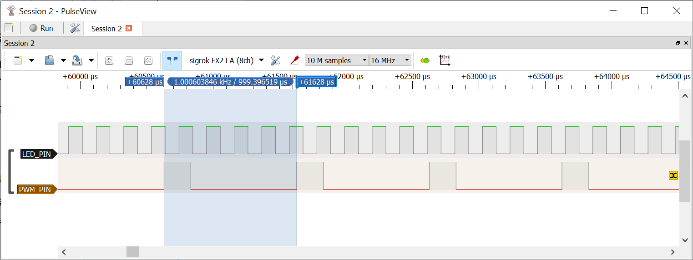
รูป: การวัดสัญญาณที่ขา LED_PIN และ PWM_PIN (วัดคาบได้ประมาณ 999.37 usec)
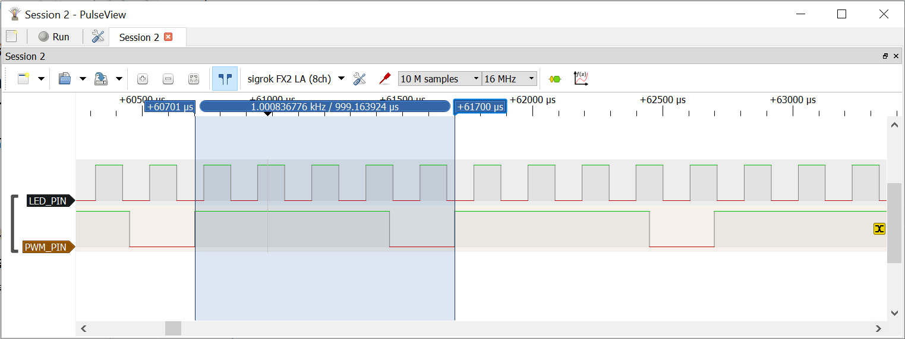
รูป: การวัดสัญญาณที่ขา LED_PIN และ PWM_PIN เมื่อมีการปรับความกว้างของพัลส์เพิ่มขึ้น
โดยปรับระดับแรงดันที่ขาอินพุต A0 ให้สูงขึ้น
▷ กล่าวสรุป#
บทความนี้ได้นำเสนอตัวอย่างการเขียนโค้ดภาษาซีสำหรับ ATmega328P เพื่อใช้งานวงจร ADC ที่อยู่ภายในชิป สาธิตการทำงานของวงจร ADC ในโหมดที่แตกต่างกัน เช่น Single Connversion และ Auto Trigger Conversion
This work is licensed under a Creative Commons Attribution-ShareAlike 4.0 International License.
Created: 2023-05-06 | Last Updated: 2023-05-07